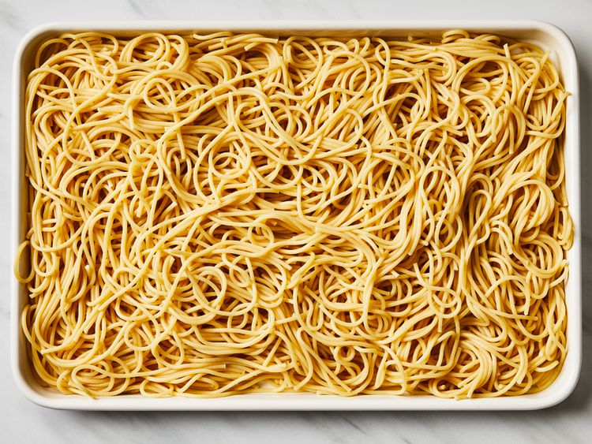
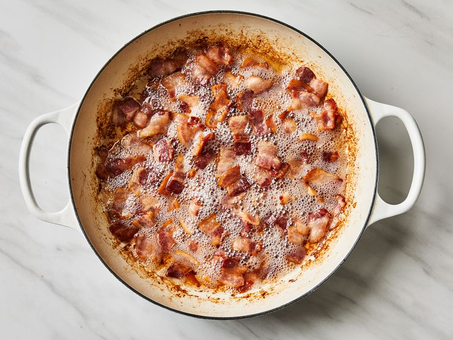
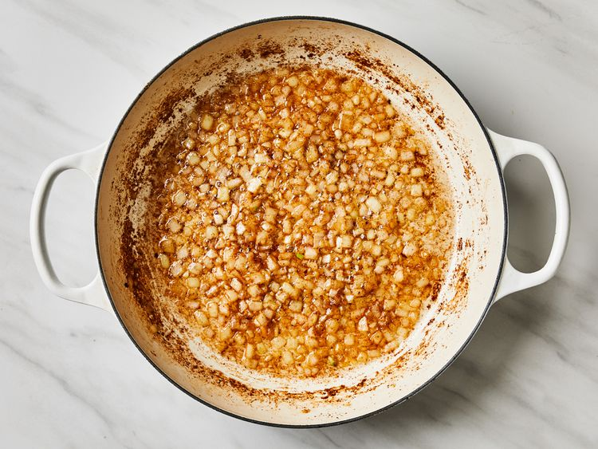
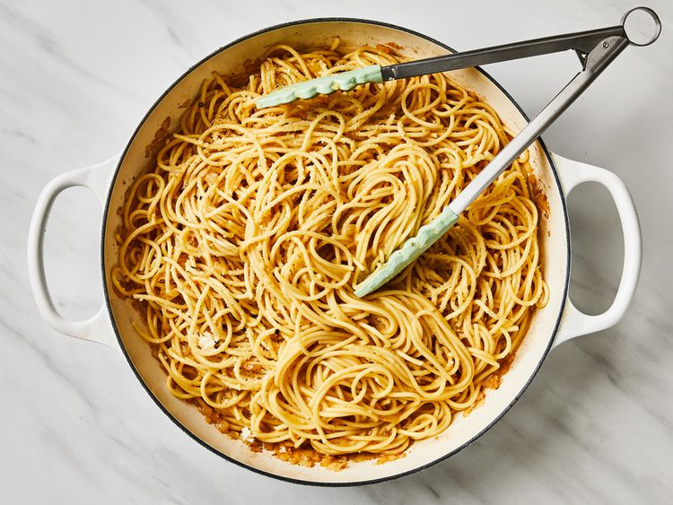
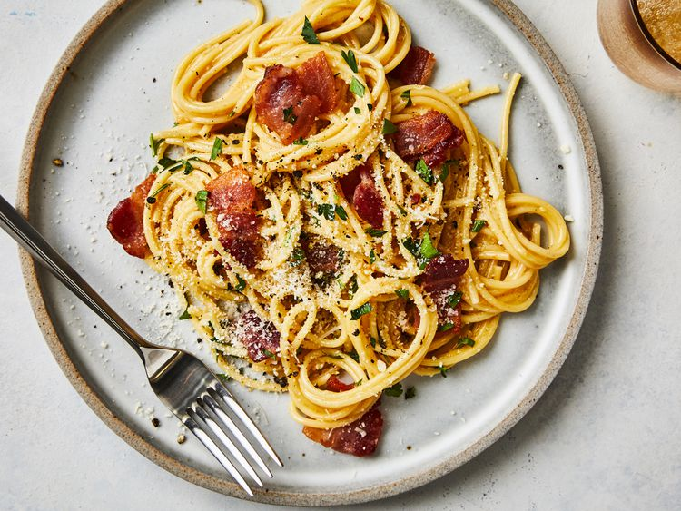

Back to Homepage
Carbonara

Description
This bacon carbonara is a super rich, classic "bacon and egg" spaghetti dish that's great to serve for company.
This recipe also makes an unusual brunch offering.
Ingredients
- 1 pound spaghetti
- 2 tablespoons olive oil, divided, or as needed
- 8 slices bacon,diced
- 1 onion, chopped
- 1 clove garlic,minced
- 1/4 cup dry white wine
- 4 large eggs, beaten
- 1/2 cup grated parmesan cheese
- salt and black pepper to taste
- 2 tablespoons chopped fresh parsley
- 2 tablespoons grated Parmesan cheese
Directions
- Bring a large pot of lightly salted water to a boil. Cook spaghetti in boiling water,
stirring occasionally, until tender yet firm to the bite, about 12 minutes.
Drain, toss spaghetti with 1 tablespoon olive oil, and set aside.

-
Place diced bacon in a large skillet over medium heat; cook and stir until evenly browned, about 10 minutes.
Drain bacon on paper towels, reserving 2 tablespoons bacon fat in the skillet.

-
Add 1 tablespoon olive oil to bacon fat in the skillet. Add chopped onion and cook over medium heat until onion is translucent.
Add minced garlic and cook until fragrant, about 1 minute. Add wine and cook 1 minute more.

-
Return cooked bacon to the skillet; add cooked spaghetti. Toss to coat and heat through, adding more olive oil if it seems dry or sticks together.
Add beaten eggs and cook, tossing constantly with tongs or a large fork, until eggs are barely set. Quickly add 1/2 cup Parmesan cheese and toss again.
Season with salt and pepper (remember that bacon and Parmesan are very salty).

-
Serve warm with chopped parsley sprinkled on top and extra Parmesan cheese at the table.

Back to Homepage